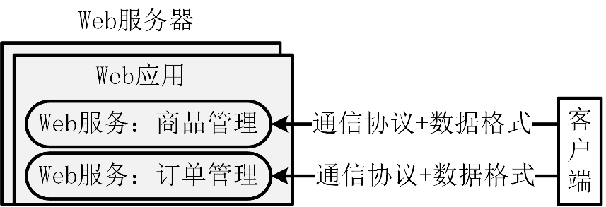
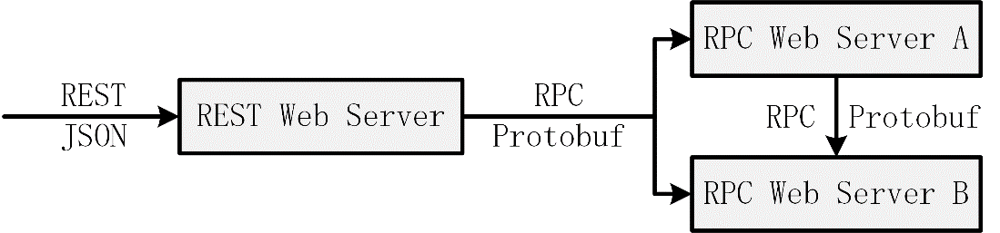
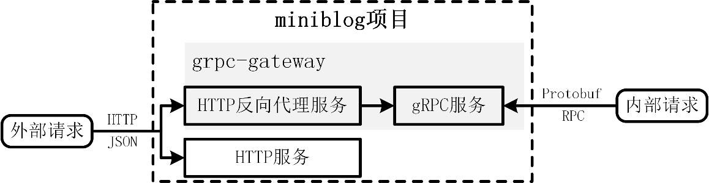

什么是 Web 应用
在项目开发过程中，经常会听到三个相关的术语：“Web 服务”“Web 应用”“Web 服务器”。那么，这三个概念如何定义？它们之间又有哪些区别和联系？不同团队和组织对这三个概念的定义可能略有不同，但通常情况下，可以概括为以下几点：
- **Web 服务：**Web 服务是一种通过网络提供的功能服务，其通信基于标准的 HTTP、RPC 或其他协议。Web 服务遵循客户端-服务器模型，客户端使用 Web 服务支持的协议向服务端发送请求，服务端处理请求后返回相应的数据包。在通信过程中，为了确保双方能够理解对方的信息，需要使用统一约定的通信协议和数据交换格式；
- **Web 应用：**Web 应用是基于 Web 技术开发的具体应用程序，它是 Web 服务的实现者，运行在 Web 服务器上。Web 应用可以利用 Web 服务实现特定的功能，例如通过远程 API 获取数据；
- **Web 服务器：**Web 服务器指提供 Web 服务的软件或硬件设备，是 Web 应用运行和管理所需的基础架构和环境。Web 服务器负责配置、监控和维护 Web 应用，同时在客户端与 Web 应用之间充当通信桥梁。客户端向 Web 服务器发送请求，服务器将请求转发到具体的 Web 应用进行处理，并将结果返回给客户端。
总结来看，Web 应用是基于 Web 技术开发的具体应用程序，其中包含了多个 Web 服务。Web 应用可以部署在 Web 服务器上，而 Web 服务器则为 Web 应用提供运行与管理所需的基础设施。

此外，根据 Web 服务所支持的通信协议，这三个概念还可以细分为 HTTP 服务/HTTP 应用/HTTP 服务器，以及 RPC 服务/RPC 应用/RPC 服务器等。
在实际工作中，很少有人会严格区分这三个概念。三个概念在使用时通常可以混用，但大多数情况下实际指代的是 Web 服务，因为 Web 服务才是我们最终需要关注的核心。
如何实现一个 Web 服务
为了高效开发一个 Web 服务，通常需要进行以下技术选型：
- **通信协议：**根据具体的业务场景和需求选择合适的通信协议；
- **数据交换格式：**根据具体的业务场景和需求选择适用的数据交换格式。在选择数据交换格式时，还需考虑通信协议的支持情况，因为不同的通信协议支持的数据交换格式可能不同；
- **Web 框架：**由于 Web 服务通常包含多个 API 接口，选择合适的 Web 框架可以提高开发效率和代码复用率。我们可以选择从零自行设计开发一个框架，也可以直接使用业界成熟的开源 Web 框架。在选择 Web 框架时，需要考虑通信协议和数据交换格式，因为每个 Web 框架支持的通信协议和数据交换格式可能有所不同。一款优秀的 Web 框架通常能够满足所需的通信协议和数据交换格式。
如何选择合适的通信协议和数据交换格式
开发 Web 服务的第一步是根据业务场景和需求选择适用的通信协议与数据交换格式，二者的定义如下：
- **通信协议：**通信协议是规定计算机或设备之间通信规则的协议，定义了数据传输的格式、传输方式、错误检测及纠正机制等。常见的通信协议包括 HTTP、RPC、WebSocket、TCP/IP、FTP 等。不同的通信协议支持的数据交换格式也会有所不同；
- **数据交换格式：**数据交换格式（也称数据序列化格式）是为不同系统之间传输和解析数据制定的规范，定义了数据的结构、编码方式及解析方法。常见的数据交换格式包括 JSON、Protobuf、XML 等。
首先，我们需要根据业务场景和需求，选择合适的通信协议。在 Go 项目开发中，常用的通信协议包括 HTTP、RPC 和 WebSocket，其中使用最频繁的是 HTTP 和 RPC。在实际开发中，通常选择 REST API 接口规范来开发 API 接口，这些 API 接口的底层通信基于 HTTP 协议。而实现 RPC 通信时，则通常使用 gRPC 框架。gRPC 是由谷歌开源的一个 RPC 框架。
RPC 也可以理解为一种通信协议，但它是基于其他协议（例如 TCP、UDP、HTTP）封装而成的通信协议。
接下来，根据所选的通信协议，选择最佳适配的数据交换格式。HTTP 和 RPC 各自有其推荐使用的数据交换格式，这可以视为事实上的标准。在无特殊需求的情况下，一般不需要改变这种适配关系：HTTP 协议通常采用 JSON 数据格式，而 RPC 通常采用 Protobuf 数据格式。
HTTP 和 RPC 在不同的场景下各有适配。在企业应用开发中，通常会结合两种通信协议，共同构建一个高效的 Go 应用：
- **对外：**REST（基于 HTTP 协议）+ JSON 的组合。由于 REST API 接口规范清晰直观，JSON 数据格式易于理解和使用，并且客户端和服务端通过 HTTP 协议通信时无需使用相同的编程语言，因此 REST+JSON 更适合用于对外提供 API 接口；
- **对内：**gRPC（基于 RPC 协议）+ Protobuf 的组合。由于 RPC 协议调用便捷、Protobuf 格式的数据传输效率更高，因此 gRPC+Protobuf 更适合用于对内提供高性能的 API 接口。
为了更好地开发 Web 服务，通常不会直接使用裸 HTTP 或 RPC 协议，而是基于这些协议封装一层框架来使用。因此，文中提到的“通信协议”实际上指的是协议在实际应用中的使用形态。
REST+JSON 和 RPC+Protobuf 这两种组合在企业级应用中应用广泛。二者并非相互取代，而是各自适用于不同的场景，相辅相成。在企业应用中，REST 与 RPC 的组合方式通常如图 7-2 所示。

外部请求通过 REST+JSON 访问 Web 服务，Web 服务通过 RPC+Protobuf 访问应用内的其他服务。应用内服务间调用通过 RPC+Protobuf 来调用。
此外，很多 Go 应用采用了一种更灵活、更强大的构建方式：在一个 Web 服务器中同时实现 REST 接口和 RPC 接口。外部客户端调用 REST 接口，内部服务调用 RPC 接口，而 REST API 通过代理，将请求转发到内部的 RPC 接口。通过这种方式，只需实现一套 RPC 接口，就可以通过代理对外提供 REST 接口。例如，可以使用 grpc-gateway 将 HTTP 请求转换为 gRPC 请求。
如何选择一个优秀的 Web 框架
在选择了合适的通信协议和数据交换格式之后。还需要准备一个 Web 框架，用来管理和实现 Web 服务中的 API 接口。可以通过以下三种方法来准备：
- 从 0 到 1 开发一个 Web 框架；
- 基于某个 Web 框架进行魔改；
- 选择业界开源的优秀 Web 框架。
在我看来，如无特殊需求，应尽可能直接使用业界优秀的开源 Web 框架，原因如下：
- 优秀的开源 Web 框架，通常具有功能全、扩展性好、代码质量高、功能稳定、性能高等特点，框架的功能和扩展性，能够支持我们开发大部分 Web 服务时的所有诉求。而且优秀的开源框架，有众多优秀的贡献者，其代码和功能会不断向前迭代，使用这些框架，也能够让我们充分享受到版本升级带来的红利。另外，直接使用优秀的开源框架，可以极大的提升我们的开发效率；
- 如果自己开发或者魔改一个 Web 框架，通常需要耗费较多人力，开发效率低下，而且框架可能会因为开发者能力不高，造成框架性能不好、功能不稳定。另外，后期维护升级也需要开发者亲力亲为，维护成本高。
在我的职业生涯中，我开发过不少 Web 服务，也学习过其它团队开发的 Web 服务，这里也分享下感受：绝大部分 Web 服务可以直接使用原生的优秀开源框架，有些功能不满足，基本都可以通过 Web 框架提供的扩展能力进行扩展。少部分自己从 0 到 1 开发的 Web 框架中，大部分也都是可以直接用开源框架进行替代的。几乎没见过魔改开源框架的 Web 服务。
当前社区存在很多 Web 框架，例如 Gin、Iris、Echo、Revel 等。Gin 因为其高性能、简单易用、生态强大等特点，成为最受欢迎的非微服务类 Web 框架，Gin 也是我非常推荐的非微服务类 HTTP Web 框架。
业界当前支持 RPC 的非微服务框架不多，最受欢迎的是 grpc-go。grpc-go 是一种基于谷歌开源的 RPC（远程过程调用）框架 gRPC 的 Go 语言实现。grpc-go 提供了一种高效、可靠、跨语言的远程调用机制，使得不同服务之间可以方便地进行通信和交互。如果你想开发一个 RPC 服务，grpc-go 也是我首推的 RPC 框架。
miniblog 项目中实现的 Web 服务类型
miniblog 是一个小而美的项目，虽然项目不大，却同时实现了 HTTP 和 gRPC 两种 Web 服务类型，miniblog 具体的服务类型如图。

miniblog 项目使用 Gin 框架实现了 HTTP 服务，使用 gRPC 框架实现了 gRPC 服务，使用 grpc-gateway 实现了 HTTP 反向代理服务，用来将 HTTP 服务转换为 gRPC 服务。同时，miniblog 项目支持通过配置文件中的 tls.use-tls 配置项开启 TLS 认证。mb-apiserver 服务启动时，可通过配置文件中的 server-mode 配置项来配置启动的 Web 服务类型：
- server-mode=gin：启动使用 Gin Web 框架开发的 HTTP 服务；
- server-mode=grpc：启动使用 grpc+grpc-gateway 框架开发的 gRPC 服务，同时支持 HTTP 请求。在 mb-apiserver 接收到 HTTP 请求后，HTTP 反向代理服务，会将 HTTP 请求转换为 gRPC 请求，并转发给 gRPC 服务接口。
这里再解释下为什么 miniblog 项目会同时实现 HTTP 反向代理服务、gRPC 服务和 HTTP 服务：
- **HTTP 反向代理服务 + gRPC 服务：**在 Go 项目开发中，外部系统一般通过 HTTP 接口访问服务，而内部系统则基于性能和调用便捷性的考虑，更倾向于使用 RPC 接口通信。一般情况下，服务只需要对外提供一种类型的通信协议。例如，仅提供 gRPC 接口，外部系统如果需要访问可以访问 API 网关，请求在 API 网关层被转换为 gRPC 请求。但这种方式依赖于 API 网关基础设施，在企业应用开发中，有些服务因为种种原因（例如，企业没有 API 网关），并不会接入 API 网关，所以这在这种情况下，服务内置一个 HTTP 反向代理服务器，用于支持 HTTP 请求，并将请求自动转换为 gRPC 请求，以解决此类诉求。miniblog 服务的 HTTP 反向代理服务器+gRPC 服务的组合模式，既能满足外部系统的访问需求，又能满足内部服务之间的访问需求；
- **HTTP 服务：**绝大多数企业应用通过 HTTP 接口对外提供服务，这类 HTTP 服务通常使用 Gin 框架开发。本课程中的 HTTP 服务实现仅用于展示如何使用 Gin 框架开发 HTTP 接口。